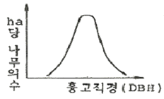
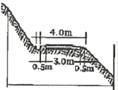

산림산업기사 (2012-05-20 기출문제)
1과목: 조림학
1. 임지에서 석회의 생리작용은?
- 임목의 엽록소생성에 중대한 관계가 있다.
- 조부식산을 중화한다.
- 임목의 인산 이동에 관계한다.
- 임목의 단백질 생성 이동에 큰 관계를 한다.
(정답률: 86%)

2. 택벌작업의 장점이 아닌 것은?
- 토양이 항상 나무로 덮여 보호를 받게 된다.
- 결실이 잘된다.
- 하층목 손상이 거의 없다.
- 좁은 면적의 수풀에서 보속적 수확을 올리는 작업을 할 수 있다
(정답률: 76%)
3. 뿌리에서 양분운반이 이루어 질 때 관여하는 카스페리안대(casparian strip)의 설명으로 맞는 것은?
- 내피에서 자유공간을 없앰으로써 무기염이 더 이상 자유롭게 뿌리 속으로 이동할 수 없도록 막아 준다.
- 양료의 자유이동이 가능하도록 해준다.
- 뿌리의 삼투압에 관여하는 뿌리의 수분흡수에 결정적으로 관여하는 조직이다.
- 무기염의 비선택적 흡수에 관여하는 조직이다.
(정답률: 84%)
4. 산벌작업 내용 중에 포함되지 않는 것은?
- 하종벌
- 획벌
- 예비벌
- 후벌
(정답률: 93%)
5. 우리나라에서 덩굴식물을 제거하기 적합한시기는?
- 2월
- 4월
- 7월
- 12월
(정답률: 86%)
6. 풀베기 작업종류 중 둘레베기에 적합한 조림지는?
- 밀식 조림지
- 한풍해 예상 지역
- 토양이 비옥한 조림지
- 소나무 등 양수를 조림한 지역
(정답률: 76%)
7. 다음 임지비배 작업 중에서 바르게 실시하고 있는 것은?
- 등고선 방향에 직각으로 골을 파주는 경운을 실시해 준다.
- 일반적으로 성숙해가는 장령림에 대한 시비는 벌채 1~2년 전에 실시한다.
- 임지시비는 수목의 생장이 둔화되는 늦여름에서 초가을 사이에 실시하는 것이 효과적이다.
- 일반적으로 가지치기나 간벌 직후에 임지시비를 실시하는 것이 효과적이다.
(정답률: 71%)
8. 다음 수종 중 종자가 견과에 속하는 것은 어느 것인가?
- 버즘나무
- 벚나무
- 단풍나무
- 굴참나무
(정답률: 76%)
9. 다음 그림은 어떠한 내용의 숲을 뜻하는가?

- 동령림
- 택벌림
- 천연림
- 한대림
(정답률: 76%)
10. 삽수의 발근에 관한 다음 설명 중 틀린 것은?
- 발근에 영향을 미치는 호르몬은 잎과 눈에서 주로 만들어져 절구쪽으로 하강한다.
- 캘러스를 형성하여야 발근이 시작된다.
- 삽수를 중력방향과 역위로 두어도 초극과 기극의 방향은 유지된다.
- 삽수에 탄수화물의 양이 많고 질소의 양이 적을 때 발근이 더 잘되는 경향이 있다.
(정답률: 59%)
11. 혼효림의 장점으로 옳은 것은?
- 간벌 등 작업이 용이하다.
- 조림이 경제적으로 될 수 있다.
- 자연전지가 잘 된다.
- 병해충의 저항력이 높다.
(정답률: 85%)
12. 다음 중에서 완전화인 것은?
- 동백나무
- 은행나무
- 소나무
- 주목
(정답률: 80%)
13. 임목종자의 효율을 설명한 것으로 옳은 것은?
- 발아율과 실중을 곱한 것이다.
- 발아율과 용적중을 곱한 것이다.
- 발아율이다.
- 순량율과 발아율을 곱한 것이다.
(정답률: 88%)
14. 묘간거리를 2m로 했을 때 1ha의 임지에 있어서 정삼각형식재는 정방형식재보다 묘목이 몇 본더 식재되는가?
- 237.5본
- 287.5본
- 337.5본
- 387.5본
(정답률: 65%)
15. 파종상에 해가림을 해주어야 하는 수종은?
- 잣나무, 전나무
- 아까시나무, 낙엽송
- 소나무, 가문비나무
- 해송, 포플려류
(정답률: 90%)
16. 산림천이 계열의 선구수종만으로 짝지어진 것은?
- 오리나무, 가문비나무
- 주목, 잣나무
- 자작나무, 오리나무
- 싸리나무, 참나무
(정답률: 52%)
17. 무기양료의 요구량이 많은 수종으로만 구성된 것은?
- 오동나무, 물푸레나무, 미루나무
- 느티나무, 상수리나무, 오리나무
- 밤나무, 소나무, 왕버들
- 호두나무, 향나무, 느릅나무
(정답률: 70%)
18. 종자발아촉진법 중 온탕침지법을 사용하는 수종은?
- 소나무, 리기다소나무, 방크스소나무
- 주엽나무, 아까시나무
- 느티나무, 자작나무
- 물푸레나무, 잣나무
(정답률: 50%)
19. 숲가꾸기 작업에서 가지치기의 장점이 아닌 것은?
- 상장생장촉진
- 하목생장 촉진
- 수간화의 경감
- 부정아의 발생
(정답률: 83%)
20. 다음 중 목본식물의 종다양성이 가장 낮은 숲은?
- 혼효림
- 천연림
- 단순림
- 열대림
(정답률: 94%)
2과목: 산림보호학
21. 특히 침엽수의 묘에 가장 큰 피해를 주는 모잘록병의 병원균은?
- pythium debaryanum
- phytophthora cactorum
- fusarium
- pythium ultimum
(정답률: 61%)
22. 수목 녹병균류의 본기주와 중간기주를 짝지어 놓았다. 옳게 짝지어진 것은?
- 향나무와 버드나무
- 소나무와 졸참나무
- 잣나무와 배나무
- 포플러와 황벽나무
(정답률: 71%)
23. 완전변태를 하는 내시류(Endopterygota)에 속하는 목은?
- 메뚜기목
- 흰개미목
- 잠자리목
- 파리목
(정답률: 83%)
24. 오리나무잎벌레의 생태에 대한 설명 중 틀린 것은?
- 양성생식을 한다.
- 1년에 1회 발생한다.
- 유충과 성충 모두 잎을 갉아 먹는다.
- 성충은 알을 오리나무류 줄기에 낳는다.
(정답률: 80%)
25. 낙엽송 끝마름병의 증상이 아닌 것은?
- 당년에 자란 신초에 발생한다.
- 피해부에는 수지가 나오는 때가 많다.
- 가지의 환부 밑에 혹색소돌기(자낭각)가 형성된다.
- 잎표면에 미세한 갈색의 반점이 형성된다.
(정답률: 43%)
26. 매미나방에 대한 설명으로 틀린 것은?
- 침엽수와 활엽수의 잎을 식해한다.
- 부화유충은 4~5일간 난괴주위에 있다가 바람에 날려 분산한다.
- 연 1회 발생하며 나무줄기에서 성충으로 월동한다.
- 난괴 당 알 수는 평균 500개이다.
(정답률: 60%)
27. 솔잎혹파리는 무엇으로 월동하는가?
- 알
- 유충
- 번데기
- 성충
(정답률: 85%)
28. 밤나무 흰가루병의 병징이 나타나는 곳은?
- 잎
- 줄기
- 열매
- 뿌리
(정답률: 75%)
29. 다음 중 천막벌레나방의 유령기와 같이 나뭇가지 위에 모여 있는 동안에 이용하는 해충방제법으로 가장 좋은 것은?
- 땅에 비닐천을 깔고 나무를 턴다.
- 등화유살한다.
- 먹이로 유살한다.
- 벌레집을 제거하거나 소살한다.
(정답률: 73%)
30. 소나무 재선충병에 대하여 잘못 설명한 것은?
- 소나무류 중에서 적송과 흑송은 감수성이다.
- 병원선충은 솔수염하늘소의 배설물에 섞여나온다.
- 병든 나무를 소각하는 것은 좋은 방제법의 하나이다.
- 병든 나무에서는 상처로부터 나오는 송진의 양이 감소한다.
(정답률: 70%)
31. 수목에 발생하는 그을음병(sooty mold)에 관하여 잘못 설명한 것은?
- 그을음병균은 수목의 잎에 기생하며, 병원균은 담자균이다.
- 진딧물이나 깍지벌레가 번성하면 그을음병이 발생하기 쉽다.
- 그을음병은 잎의 뒷면보다는 앞면에 더 흔히 발생한다.
- 물을 자주 뿌려주는 것도 그을음병 방제법의 하나이다.
(정답률: 54%)
32. 우리나라에 서식하는 조류들을 먹이 습성에 따라 분류하였다. 다음 중 가장 높은 비율을 차지하는 조류는?
- 식물질먹이만을 섭식하는 종류
- 동물질먹이만을 섭식하는 종류
- 동물질먹이가 우선이나 식물질먹이도 섭식하는 종류
- 식물질먹이나 동물질먹이 모두 섭식하는 종류
(정답률: 61%)
33. 다음 중 각피관통에 의한 침입을 하지 않는 병원균은?
- 잣나무 털녹병균
- 뽕나무 자줏빛날개무늬병균
- 아밀라리아뿌리썩음병균
- 묘목의 모잘록병균
(정답률: 65%)
34. 주광성이 있는 해충을 등화유살을 할 경우 가장 효과가 있는 기상상태는?
- 고온다습하고 흐린 날 바람이 있을 때
- 고온다습하고 흐린 날 바람이 없을 때
- 고온건조하고 맑은 날 바람이 있을 때
- 고온건조하고 맑은 날 바람이 없을 때
(정답률: 62%)
35. 산불이 토양에 미치는 피해가 아닌 것은?
- 토양이 척박해진다.
- 토양의 이화학적 성질을 악화시킨다.
- 낙엽이 탄 결과로 토양의 투수성이 감소된다
- 토양에 직접 물이 스며들 수 있어 지표유하수가 감소한다.
(정답률: 73%)
36. 해충의 생물학적 방제의 장점이 아닌 것은?
- 생물적 방제는 효과가 영구적으로 지속된다.
- 해충밀도가 낮을 경우에서 효과를 거둘 수 있다.
- 해충밀도가 위험한 밀도에 달하였을 때 더욱 효과적이다.
- 친환경적인 방법으로 생태계가 안정된다.
(정답률: 69%)
37. 약해에 대한 설명으로 옳지 않은 것은?
- 일반적으로 열매의 피해는 적다.
- 줄기·잎이 변색된다.
- 심할 경우는 고사한다.
- 한발, 강풍 직후 또는 비가 온 후에 약해를 받기 쉽다.
(정답률: 73%)
38. 서식처로 수관층을 선호하는 조류는?
- 참새
- 노랑턱멧새
- 붉은머리오목눈이
- 산솔새
(정답률: 58%)
39. 식물체에 병원체가 침입하는 방법은 여러가지 있다. 병원체의 침입이 주로 상처를 통하여 침입이 되는 병원균으로 묶여진 것은?
- 포플러의 근두암종병균, 목재부후균
- 각종 녹병균, 소나무의 잎떨림병균
- 뽕나무자줏빛날개무늬병, 소나무재선충병
- 포플러의 줄기마름병균, 오리나무갈색무늬병
(정답률: 55%)
40. 내화력이 가장 약한 수종은?
- 회양목
- 고로쇠나무
- 삼나무
- 은행나무
(정답률: 68%)
3과목: 임업경영학
41. 다음 임업이율의 성격을 설명한 것으로 틀린 것은?
- 임업이율은 대부이자이다.
- 임업이율은 명목적 이율이다.
- 임업이율은 장기이율이다.
- 임업이율의 계산은 복리를 적용한다.
(정답률: 83%)
42. 산림평가 시 임업이율은 보통이율보다 낮아야 한다는 이유를 잘못 설명한 것은?
- 재적 및 금원 수확의 증가와 산림재산가치의 등귀 때문
- 산림소유의 불확실성 때문
- 산림의 관리경영이 간편하기 때문
- 생산기간의 장기성 때문
(정답률: 55%)
43. 임종의 조사에 관한 설명으로 옳은 것은?
- 임분이 성립된 원인을 규명하는 일
- 임분내 수종을 조사하여 임목의 배열상태를 명백히 하는 일
- 일정한 임지에서 각 수관이 투영한 상태를 파악하는 일
- 임목을 흉고직경의 크기에 따라 나누는 일
(정답률: 61%)
44. 산림평가 면에서 본 산림의 구성내용에 관한 설명으로 옳지 않은 것은?
- 산림의 공익적 기능은 종류별로 분류하여 계량평가를 한다.
- 임도·저목장·건물 등 임지 안의 시설에 대하여 평가한다.
- 임지 안의 동물·토석·광물 등에 대하여는 평가하지 않는다.
- 임지는 자연적 요소, 지위 및 지리별 입목지 벌채적지·미립목지·시설부지·암석지·자소 등으로 나누어 평가한다.
(정답률: 83%)
45. 다음은 공유림 경영의 목적이다. 틀린 것은?
- 공공복지 증진
- 국유림 경영의 지원
- 재정 수입의 확보
- 사유림 경영의 시범
(정답률: 79%)
46. 임업원가관리에 있어 특수한 의사결정을 위한 원가유형의 분류가 아닌 것은?
- 직접원가와 간접원가
- 현금지출원가와 매몰원가
- 기회원가
- 한계원가와 증분원가
(정답률: 59%)
47. 어떤 입목을 측정하였더니 수피 외 직경(DOB)이 14cm이고, 수피 두께가 5mm이었다. 이 입목의 수피내직경(DIB)은 얼마인가?
- 13.5cm
- 13.0cm
- 12.5cm
- 12.1cm
(정답률: 71%)
48. 미처분 임산물은 어느 자산에 속하는가?
- 고정자산
- 유동자산
- 임목자산
- 부채
(정답률: 75%)
49. 산림평가의 가치평가방법 중 재화의 판패가격의 최저한도결정에 활용되는 평가방법은 무엇인가?
- 매매가
- 기망가
- 자본가
- 비용가
(정답률: 44%)
50. 농지의 주변이나 농지와 산지의 경계선 등에 유실수나 특용수 또는 속성수 등을 식재하여 임업수입의 조기화를 도모하는 형태의 임업경영은?
- 비임지임업
- 혼농임업
- 농지임업
- 혼목임업
(정답률: 79%)
51. 산림생장 및 예측모델을 구축하는데 있어서 제일 먼저 수행해야 할 과정은 어느 것인가?
- 자료수집
- 모델구성
- 자료 분석 및 생장 함수식 유도
- 모델선정 및 설계
(정답률: 63%)
52. 벌채목의 재적을 산출하기 위해 단면적을 구할 때 원구와 말구의 단면적을 평균하는 방법을 사용하는 식은?
- 후버식
- 스말리안식
- 뉴톤식
- 4분주식
(정답률: 73%)
53. 산림경영의 지도원칙 중에서 수익성의 원칙에 대한 설명으로 옳은 것은?
- 최대의 이익 또는 이윤을 얻을 수 있도록 경영하여야 한다는 원칙
- 최대의 경제성을 올리도록 경영하는 원칙
- 토지의 생산력을 최대로 추구하는 원칙
- 최소의 비용으로 최대의 효과를 발휘하는 원칙
(정답률: 59%)
54. 벌채목의 실적계수 크기에 관계가 없는 인자는 무엇인가?
- 수종
- 통나무의 형상
- 통나무의 크기
- 통나무의 임목도
(정답률: 58%)
55. 다음 중 산림평가의 개념에 대한 설명으로 맞는 것은?
- 산림평가는 정밀한 평가가 필요 없다.
- 산림은 일반적 부동산 감정평가와 동일한 평가방식을 적용한다.
- 임지·임목의 개별적 요인이 크게 다르기 때문에 정밀하게 평가하기가 어렵다.
- 산림평가에서는 재무회계 계산의 방법이 쓰인다.
(정답률: 78%)
56. 취득원가에서 감가상각비누계액을 뺀 후, 장부원가에 일정율의 감가율을 곱하여 감가상각비를 산출하는 방법은?
- 작업시간비례법
- 생산량비례법
- 연수합계법
- 정률법
(정답률: 86%)
57. 원가의 기록을 위한 분류에서 공장장의 급료나 공장건물의 감가상각비는 원가의 유형을 분류하는 방법 중 어디에 포함되는가?
- 고정원가
- 기회원가
- 한계원가
- 증분원가
(정답률: 79%)
58. 산림조사에 관한 설명 중 맞지 않는 것은?
- 지위는 임지의 생산능력의 양부를 표시한 급수이다.
- 임종은 침엽수림, 활엽수림, 침활혼효림으로 표시한다.
- 혼효율은 주요 수종의 수관점유면적비율 또는 입목 본수비율에 의해 백분율로 산정한다.
- 소밀도는 조사면적에 대한 입목의 구관면적이 차지하는 비율을 백분율로 한다.
(정답률: 75%)
59. 다음의 설명 중 맞는 것은?
- 공예적 벌기령이 최대의 화폐수익과 일치하면 가장 이상적인 벌기령이 된다.
- 일반적으로 산림순수익 최대의 벌기령은 사유림에서 적용한다.
- 화폐수익 최대의 벌기령은 일반경제원칙과 일치하는 벌기령이다.
- 재적수확 최대의 벌기령은 사유림에서 적용하기 좋은 벌기령이다.
(정답률: 59%)
60. 경영계획작성을 위한 산림조사에서 지황과 임황의 세부 조사단위는?
- 사업구
- 작업구
- 임반
- 소반
(정답률: 61%)
4과목: 산림공학
61. 작업강도의 지표로서 가장 많이 이용되고 있는 생리적부담 측정평가방법은?
- 호흡계수
- 분당 산소소비량
- 맥박수
- 에너지대사율
(정답률: 71%)
62. 야계사방공사에 있어서 만곡부의 처리사항으로 알맞은 것은?
- 큰 유로의 경우 최소반지름을 밑나비의 10배 이상으로 한다.
- 작은 유로의 경우 최소반지름을 밑나비의 5배 이상으로 한다.
- 이동 토사가 적은 경우 적당한 반지름은 최소반지름의 2배로 한다.
- 이동 토사가 많은 경우 적당한 반지름은 5배로 한다.
(정답률: 65%)
63. 산복비탈면에서 비탈다듬기공사를 설계·시공할 때 유의해야 할 점이 아닌 것은?
- 경사가 급한 장소에서는 산비탈 돌쌓기로 조정한다.
- 붕괴면 주변의 상부는 충분히 끊어내도록 한다.
- 비옥한 표토는 가능한 산복면에서 긁어내어 다른 용도로 이용한다.
- 속도랑공사 및 묻히기공사는 비탈다듬기공사를 하기 전에 시공하는 것이 효과적이다.
(정답률: 64%)
64. 수중굴착 및 구조물의 기초바닥 등 상당히 깊은 범위의 굴착과 호퍼(hopper)작업에 적합한 기종은?
- 크레인(crane)
- 백호우(backhoe)
- 클램셸(clamshell)
- 어드드릴(earth drill)
(정답률: 85%)
65. 임업토목공사용 석재 중 자연적으로 개천 계곡에 있는 무게가 약 100kg 이상인 자연 전석으로서 주로 돌쌓기현장 부근에서 채취하여 찰쌓기와 메쌓기 등에 사용하는 돌은 무엇인가?
- 호박돌
- 막깬돌
- 야면석
- 견치돌
(정답률: 79%)
66. 상단면적120m2, 하단면적200m2, 상하단의 거리가 12m인 곳의 토사량은 얼마인가? (단, 평균단면적법으로 계산한다.)
- 192m3
- 1920m3
- 384m3
- 3849m3
(정답률: 80%)
67. 벌목운재계획을 위한 예비조사가 아닌 것은?
- 벌목구역의 개황 조사
- 벌목구역의 확인 및 임황 및 지황조사
- 반출방법에 대한 조사
- 기존 실행결과에 의한 조사
(정답률: 76%)
68. 다음의 그림은 어떤 임도에 해당하는가?

- 능선임도
- 지선임도
- 사리도
- 지방국도
(정답률: 63%)
69. 4싸이클 기관과 비교한 2싸이클 기관의 특징으로 옳지 못한 것을 고르면?
- 배기음이 높다.
- 흡·배기 시간이 짧고 연료소비량이 크다.
- 중량이 가볍고 단위 중력당 출력이 높다.
- 판기구, 윤활유 펌프 등이 필요하므로 구조가 복잡하다
(정답률: 63%)
70. 평균 유속이 2m/s, 유적이 12m2일 때 유량은?
- 6m3/s
- 12m3/s
- 24m3/s
- 48m3/s
(정답률: 84%)
71. 다음 중 간선임도의 설계속도가 옳은 것은?
- 30~10km/시간
- 30~20km/시간
- 40~20km/시간
- 50~30km/시간
(정답률: 80%)
72. 다음 중 조재작업에 속하지 않는 것은?
- 박피
- 조재목 모으기
- 가지자르기
- 통나무 자르기
(정답률: 66%)
73. 도저의 기종 중 벌목, 제근용 목적에 적합한 장비가 아닌 것은?
- bulldozer
- tree dozer
- ripper bulldozer
- rake dozer
(정답률: 56%)
74. 비탈면 안정을 위한 침식방지제의 사용효과에 대한 내용으로 틀린 것은?
- 보온효과 기대
- 객토의 유출 및 침식방지
- 토양사분의 증산촉진 및 표면건조 유도
- 살포되는 종자, 비료, 피복보호제 등의 유실방지
(정답률: 71%)
75. 쇄석·자갈을 부설한 노면의 경우 횡단기울기는 몇%정도로 시공하도록 정하고 있는가?
- 1.5~2%
- 2~3%
- 3~5%
- 5~6%
(정답률: 59%)
76. 사방댐의 높이가 5m, 월류수심이 1m일 때, 사방댐의 물받이의 두께는 얼마로 하는 것이 적합한가?(단, 경험치에 의한값(∝)은 0.2이다)
- 0.5m
- 1.0m
- 1.25m
- 1.5m
(정답률: 43%)
77. 다음 중 사방댐 설치 목적이 될수 없는 것은?
- 토석류 피해 저지
- 산각 고정
- 물 이용
- 식생 복구
(정답률: 69%)
78. 다음 중 임목수확시의 작업수행규칙으로 옳지 않은 것은?
- 작업 경비의 절감
- 높은 수익의 획득
- 작업 수행의 안전
- 환경 피해의 은폐
(정답률: 86%)
79. 주로 비탈면 물매가 1:1보다 완만한 비탈에 흙이 털어지지 않은 온떼를 사용하여 전면녹화를 목적으로 시공하는 비탈녹화공법은?
- 줄떼다지기
- 평떼붙이기
- 띠떼심기
- 선떼붙이기
(정답률: 86%)
80. 다음 중 임도노면의 유지보수 사항에 대한 설명으로서 맞지 않는 것은?
- 임도노면에 생긴 바퀴자국이나 골을 없앤다.
- 노면보다 높은 길어깨를 깍아내고 다진다.
- 노면의 정제는 건조한 상태에서 실시하는 것이 좋다.
- 약화된 노체의 지지력을 보강한다.
(정답률: 85%)